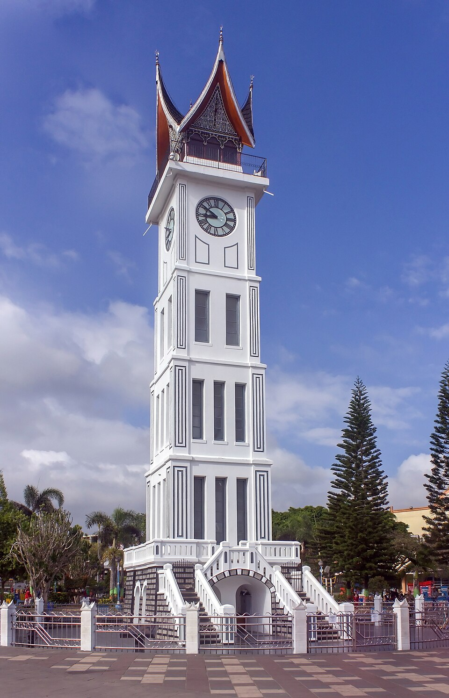
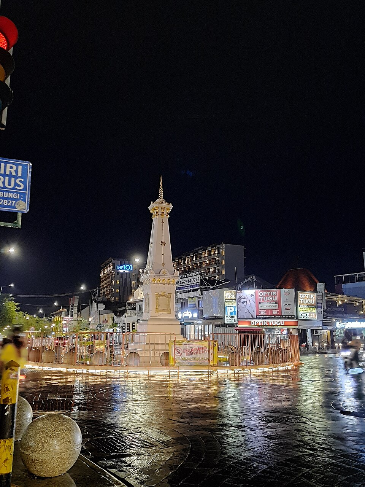
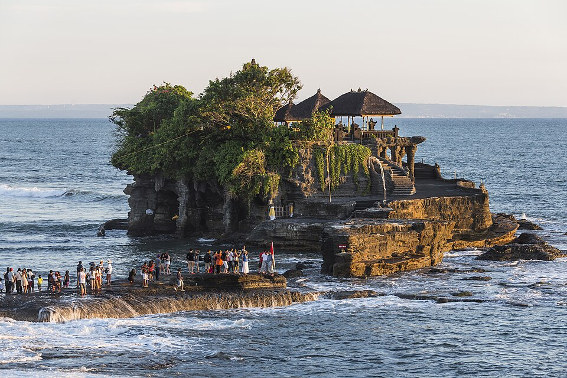

Daftar Provinsi
Provinsi adalah wilayah administratif tingkat pertama di Indonesia yang dipimpin oleh seorang gubernur. Saat ini Indonesia memiliki 38 provinsi yang tersebar dari Pulau Sumatra di barat hingga Pulau Papua di timur. Berikut 10 di antaranya:
- Aceh
- Sumatera Utara
- Sumatera Barat
- DKI Jakarta
- Jawa Barat
- DI Yogyakarta
- Bali
- Kalimantan Timur
- Sulawesi Selatan
- Papua
Informasi Provinsi
| Provinsi | Ibu Kota | Pulau | Hal Menarik |
|---|---|---|---|
| Aceh | Banda Aceh | Sumatra | Masjid Raya Baiturrahman dan Tari Saman |
| Sumatera Utara | Medan | Sumatra | Danau Toba, danau vulkanik terbesar di dunia |
| Sumatera Barat | Padang | Sumatra | Rumah Gadang dan rendang |
| DKI Jakarta | Jakarta | Jawa | Monumen Nasional (Monas) dan budaya Betawi |
| Jawa Barat | Bandung | Jawa | Kawah Putih dan alat musik angklung |
| DI Yogyakarta | Yogyakarta | Jawa | Keraton Yogyakarta dan Jalan Malioboro |
| Bali | Denpasar | Bali | Pura Tanah Lot dan Tari Kecak |
| Kalimantan Timur | Samarinda | Kalimantan | Lokasi Ibu Kota Nusantara (IKN) |
| Sulawesi Selatan | Makassar | Sulawesi | Tana Toraja dan kapal pinisi |
| Papua | Jayapura | Papua | Danau Sentani dan burung cenderawasih |
Provinsi Pilihan 1
Sumatera Barat

Sumatera Barat adalah tanah asal suku Minangkabau. Wilayah ini pernah menjadi pusat Kerajaan Pagaruyung dan melahirkan banyak tokoh nasional, seperti Mohammad Hatta, Sutan Sjahrir, dan Buya Hamka.
Provinsi ini terletak di pesisir barat Pulau Sumatra dan dilalui Pegunungan Bukit Barisan. Alamnya terdiri dari pantai, lembah, danau seperti Danau Maninjau dan Danau Singkarak, serta gunung berapi seperti Gunung Marapi.
Masyarakat Minangkabau menganut sistem kekerabatan matrilineal, yaitu garis keturunan mengikuti pihak ibu. Budaya merantau juga sangat kuat, dengan filosofi "adat basandi syarak, syarak basandi Kitabullah".
- Makanan khas: Rendang dan Sate Padang
- Wisata: Jam Gadang dan Ngarai Sianok
- Budaya: Rumah Gadang dan Tari Piring
Provinsi Pilihan 2
DI Yogyakarta

Yogyakarta berdiri sejak Perjanjian Giyanti tahun 1755 sebagai Kesultanan Ngayogyakarta Hadiningrat. Kota ini pernah menjadi ibu kota Republik Indonesia pada tahun 1946–1949, sehingga mendapat status Daerah Istimewa.
Yogyakarta terletak di bagian selatan Pulau Jawa, diapit oleh Gunung Merapi di utara dan Samudra Hindia di selatan. Wilayahnya meliputi dataran rendah, perbukitan kapur Gunungkidul, dan deretan pantai selatan.
Yogyakarta dikenal sebagai kota budaya dan kota pelajar. Tradisi keraton seperti upacara Sekaten dan Grebeg masih dijalankan hingga sekarang, begitu pula seni batik, wayang kulit, dan gamelan.
- Makanan khas: Gudeg dan Bakpia
- Wisata: Keraton Yogyakarta dan Jalan Malioboro
- Budaya: Batik dan wayang kulit
Provinsi Pilihan 3
Bali

Bali pernah menjadi pusat kerajaan-kerajaan Hindu dan mendapat pengaruh besar dari Kerajaan Majapahit. Bali resmi menjadi provinsi sendiri pada tahun 1958 dengan ibu kota Denpasar.
Bali adalah pulau kecil di antara Pulau Jawa dan Pulau Lombok. Bagian tengahnya bergunung-gunung, termasuk Gunung Agung sebagai gunung tertinggi, sedangkan pesisirnya dikelilingi pantai yang indah.
Mayoritas penduduk Bali beragama Hindu sehingga dijuluki Pulau Seribu Pura. Kehidupan sehari-hari diwarnai upacara adat, sesajen, seni tari, dan sistem pengairan sawah tradisional bernama subak.
- Makanan khas: Ayam Betutu dan Sate Lilit
- Wisata: Pura Tanah Lot dan Pantai Kuta
- Budaya: Tari Kecak dan Hari Raya Nyepi